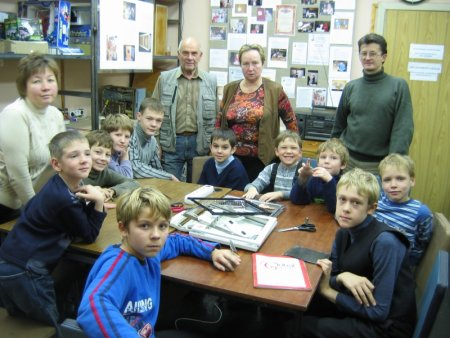
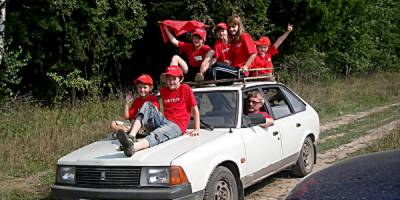
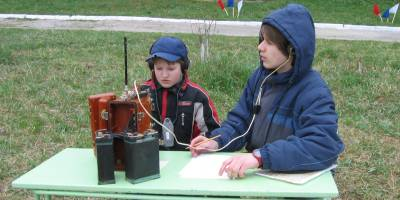
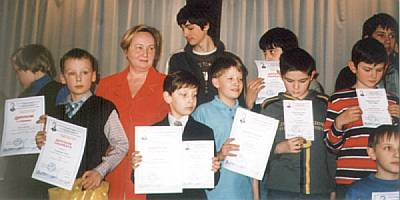

Новости
Пирогово-2008
С 17 по 18 мая радиолюбительским центром «Рател» проведен радио-туристический слет на Пироговском водохранилище.

Слет проведен при поддержке Муниципалитета Басманный.
С Днем Радио!
Сегодня: 7 мая, а это день нашего профессионального праздника. Радиолюбители всего мира! Мы поздравляем Вас с чудесным весенним праздником, удачи и счастья на волнах эфира и жизни. По новой традиции в это день все пьют чай, поют песни во славу Попова (со словами переложенными на азбуку Морзе), а студенты российских радиофакультетов сжигают чучело Маркони (в Италии соответственно наоборот. :-)) Еще разудачи и счастья на волнах эфира и жизни!
2007-05-07 >> Москва
Состоялась научно-практическая конференция "РАДИО-ПОИСК 2008", проходившая 8 апреля.
В городской конференции "Радиопоиск-2008" от РЦТД «Рател» принимали участие 10 человек, некоторые из них стали лауреатоми.
2008-04-08
С 24 марта по 4 апреля в Радиолюбительском центре «Рател» прошла "Кружковская выставка 2008"

Выставка
проходила с 24 марта по 4 апреля. Защита работ учащихся радиокружков,
прошла по секциям, в присутствии представителей Московского дворца
молодежи, Муниципалитета Басманный, Дома научно-технического творчества.
2008-04-04 >> Москва
Кружковская выставка
С 24 марта по 4 апреля в Радиолюбительском центре «Рател» будет проходить выставка работ учащихся радиокружков. Приглашаются все желающие ознакомиться с творчеством кружковцев. Лучшие работы будут представлены на городской конференции «Радио Поиск2008» и всеросийской выставке технического творчества детей на Вороьевых Горах в Дворце научно-технического творчества молодежи.
Расписание занятий, план работы с детьми на 2008
План работы детьми, подростками и молодежью Радиолюбительского Центра творчества и досуга «Рател» на 2008 год
Состоялся открытый урок в РЦТД «Рател»
На базе нашего центра проводился семинар преподавателей кружков технического направления и открытые уроки для учащихся, приглашенных кружков. Инициатива очень понравилась и дальнейшем визиты кружковцев на занятия в другие клубы будет иметь свое продолжение.

На открытых уроках каждый преподаватель может продемонстрировать инновации в преподавательской деятельности, познакомить с особенностями своих методик преподавания, ознакомить с наиболее интересными темами занятий. А дети имеют возможность сравнить занятия в различных кружках и выбрать для себя наиболее интересные и удобные для посещения кружки.
2007-11-16- >> Фотоматериалы - открытый урок в РЦТД «Рател»
"Экскурсионная программа - 2007"
Учащиеся кружков посетили выставки "Робототехника", «Музыка Москва 2007», "Чип и Дип".Состоялся слёт радиолюбительской молодежи Москвы и Московской области - "Апрелевка 2007", проходивший 17-19 августа.
Всего было 34 участника из них 10 из Ратела. участвовали в УКВ соревнованиях на портативных радиостанциях 144 Мц. Среди младшей подгруппы 1 место заняла команда Харьковского Димы и Климова Ильи, второе место Васина Саша и Казулина Мики, третье место команда из г.Химки.

В развлекательной программе были соревнования по стрельбе из лука, катание на крыше автомобиля, песни у костра (до утра) и "дискотека червяков" (танцы в спальных мешках).
Наши ребята участвовали в составе сборной команды г.Москвы с открытых очных межрегиональных соревнованиях по радиосвязи на КВ "Белый Омут-2007"

2007-04-29 >> Белый Омут
Отчет об участии в научно-практической конференции «РАДИО-ПОИСК 2007»

В работе конференции от РЦТД «Рател» принимали участие 10 человек.
Дорогие наши Радиолюбительницы, мы поздравляем Вас и всех женщин планеты Земля с чудесным весенним праздником 8 МАРТА, будьте всегда красивыми и счастливыми на просторах эфира и жизни.
Мужская половина радиолюбительского центра «Рател» и его верные друзья по эфиру, туризму и творчеству.
2007-03-08 >> Москва >> Читать дальше
Расписание занятий, план работы с детьми
План работы детьми, подростками и молодежью Радиолюбительского Центра творчества и досуга «Рател» на 2007 год
Радиостанция RK3AZY
Любительская радиостанция RK3AZY готовит юных радиолюбителей для работы в эфире на КВ и УКВ диапазонах. Работа коллективной радиолюбительской станции обеспечивает участие в соревнованиях по радиоспорту, содействует развитию радиолюбительского движения среди молодежи, помогает ребятам организовать индивидуальные любительские станции дома для занятий радиоспортом.
Для работы коллективной радиостанции имеется разрешение Главного Управления ГОСНАДЗОРА за связью РФ.
Занятия по ремонту и сервисному обслуживанию бытовой аппаратуры и радиотехники.
Для проведения занятий обеспечена материально-техническая база для с учебными местами для подростков, для привития им специальных навыков.
В рамках занятий, учащиеся знакомятся с принципами работы радиоэлектронной аппаратуры не на макетах и рисунках, не по учебникам и лекциям, а на самых современных образцах аппаратуры поступивших от населения и организаций. Полученные навыки помогают мальчишкам почувствовать себя настоящими мужчинами в семье - справляться со сложной бытовой техникой и аппаратурой. Раскрытие творческого потенциала детей, привитие им трудовых навыков поможет им в жизни.